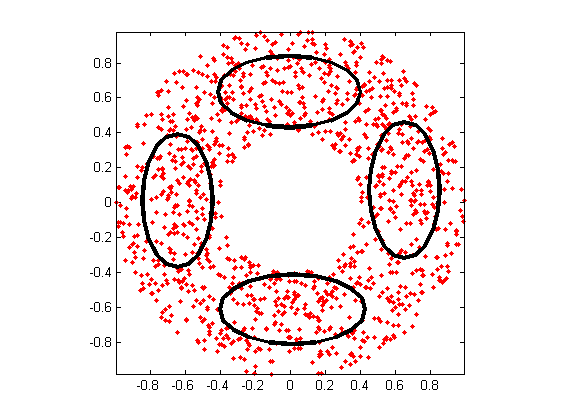
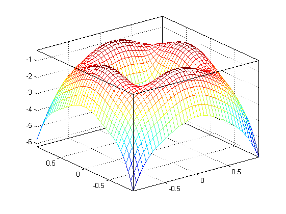
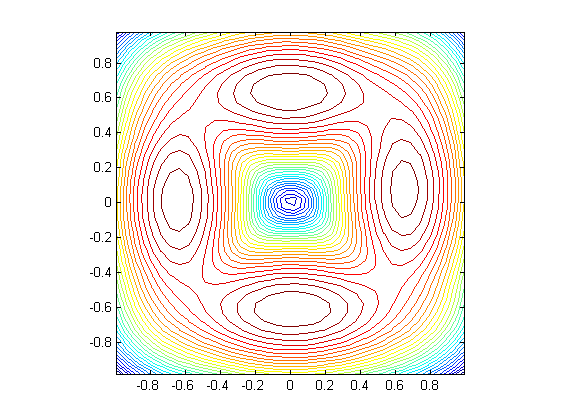

gmmTrainDemo2dCovType02
Animation of GMM training with covType=2 (diagonal cov. matrix) for 2D data
Contents
Syntax
- gmmTrainDemo2dCovType02
Description
gmmTrainDemo2dCovType02 demonstrates animation of GMM training with
covType=2 (diagonal cov. matrix) for 2D data.
Example
gmmTrainDemo2dCovType02
GMM iteration: 0/500, log likelihood. = -2623.573537 GMM iteration: 1/500, log likelihood. = -1774.046028 GMM iteration: 2/500, log likelihood. = -1700.574812 GMM iteration: 3/500, log likelihood. = -1661.195680 GMM iteration: 4/500, log likelihood. = -1635.956818 GMM iteration: 5/500, log likelihood. = -1617.847880 GMM iteration: 6/500, log likelihood. = -1601.361391 GMM iteration: 7/500, log likelihood. = -1582.498771 GMM iteration: 8/500, log likelihood. = -1559.720598 GMM iteration: 9/500, log likelihood. = -1533.551819 GMM iteration: 10/500, log likelihood. = -1506.733522 GMM iteration: 11/500, log likelihood. = -1483.468381 GMM iteration: 12/500, log likelihood. = -1466.601756 GMM iteration: 13/500, log likelihood. = -1456.040010 GMM iteration: 14/500, log likelihood. = -1450.017715 GMM iteration: 15/500, log likelihood. = -1446.745288 GMM iteration: 16/500, log likelihood. = -1445.000378 GMM iteration: 17/500, log likelihood. = -1444.072737 GMM iteration: 18/500, log likelihood. = -1443.577159 GMM iteration: 19/500, log likelihood. = -1443.310100 GMM iteration: 20/500, log likelihood. = -1443.164670 GMM iteration: 21/500, log likelihood. = -1443.084570 GMM iteration: 22/500, log likelihood. = -1443.039936 GMM iteration: 23/500, log likelihood. = -1443.014771 GMM iteration: 24/500, log likelihood. = -1443.000419 GMM iteration: 25/500, log likelihood. = -1442.992143 GMM iteration: 26/500, log likelihood. = -1442.987320 GMM iteration: 27/500, log likelihood. = -1442.984481 GMM iteration: 28/500, log likelihood. = -1442.982796 GMM iteration: 29/500, log likelihood. = -1442.981786 GMM iteration: 30/500, log likelihood. = -1442.981177 GMM iteration: 31/500, log likelihood. = -1442.980807 GMM iteration: 32/500, log likelihood. = -1442.980581 GMM iteration: 33/500, log likelihood. = -1442.980442 GMM iteration: 34/500, log likelihood. = -1442.980356 GMM iteration: 35/500, log likelihood. = -1442.980303 GMM iteration: 36/500, log likelihood. = -1442.980269 GMM iteration: 37/500, log likelihood. = -1442.980249 GMM iteration: 38/500, log likelihood. = -1442.980236 GMM iteration: 39/500, log likelihood. = -1442.980228 GMM iteration: 40/500, log likelihood. = -1442.980222 GMM iteration: 41/500, log likelihood. = -1442.980219 GMM iteration: 42/500, log likelihood. = -1442.980217 GMM iteration: 43/500, log likelihood. = -1442.980216 GMM iteration: 44/500, log likelihood. = -1442.980215 GMM iteration: 45/500, log likelihood. = -1442.980214 GMM iteration: 46/500, log likelihood. = -1442.980214 GMM iteration: 47/500, log likelihood. = -1442.980214 GMM iteration: 48/500, log likelihood. = -1442.980214 GMM iteration: 49/500, log likelihood. = -1442.980214 GMM iteration: 50/500, log likelihood. = -1442.980214 GMM iteration: 51/500, log likelihood. = -1442.980213 GMM iteration: 52/500, log likelihood. = -1442.980213 GMM iteration: 53/500, log likelihood. = -1442.980213 GMM iteration: 54/500, log likelihood. = -1442.980213 GMM iteration: 55/500, log likelihood. = -1442.980213 GMM iteration: 56/500, log likelihood. = -1442.980213 GMM iteration: 57/500, log likelihood. = -1442.980213 GMM iteration: 58/500, log likelihood. = -1442.980213 GMM iteration: 59/500, log likelihood. = -1442.980213 GMM iteration: 60/500, log likelihood. = -1442.980213 GMM iteration: 61/500, log likelihood. = -1442.980213 GMM iteration: 62/500, log likelihood. = -1442.980213 GMM iteration: 63/500, log likelihood. = -1442.980213 GMM iteration: 64/500, log likelihood. = -1442.980213 GMM iteration: 65/500, log likelihood. = -1442.980213 GMM iteration: 66/500, log likelihood. = -1442.980213 GMM iteration: 67/500, log likelihood. = -1442.980213 GMM iteration: 68/500, log likelihood. = -1442.980213 GMM iteration: 69/500, log likelihood. = -1442.980213 GMM iteration: 70/500, log likelihood. = -1442.980213 GMM iteration: 71/500, log likelihood. = -1442.980213 GMM iteration: 72/500, log likelihood. = -1442.980213 GMM iteration: 73/500, log likelihood. = -1442.980213 GMM iteration: 74/500, log likelihood. = -1442.980213 GMM iteration: 75/500, log likelihood. = -1442.980213 GMM iteration: 76/500, log likelihood. = -1442.980213 GMM total iteration count = 77, log likelihood. = -1442.980213  